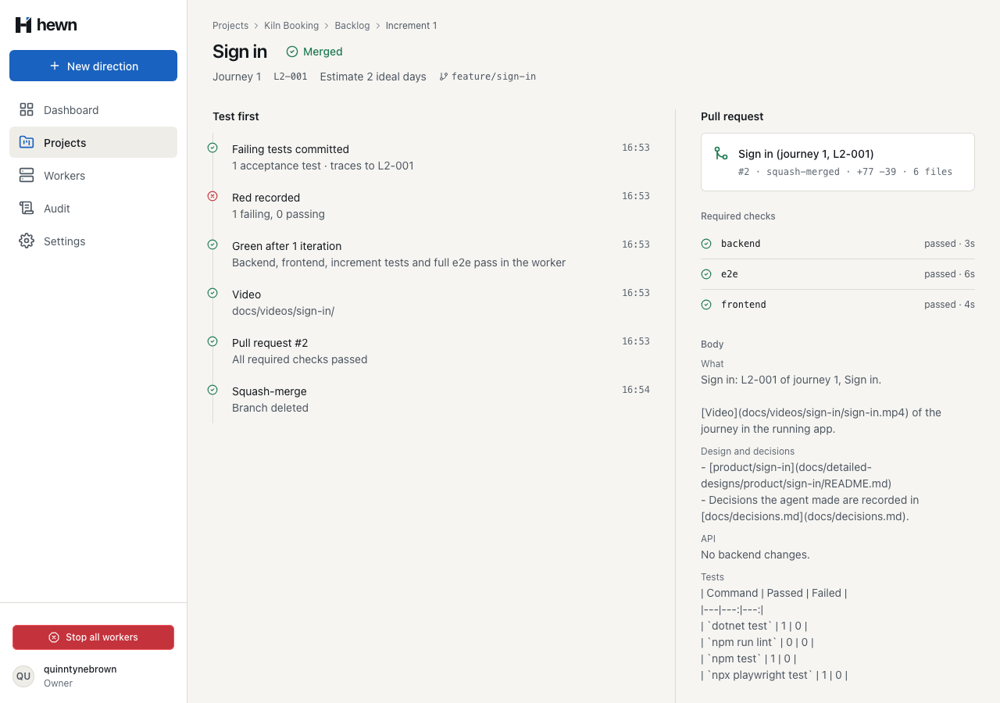
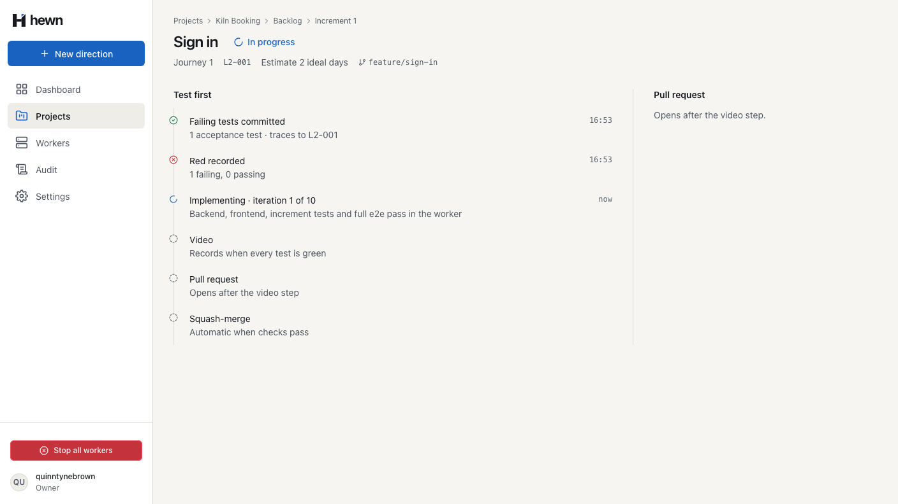
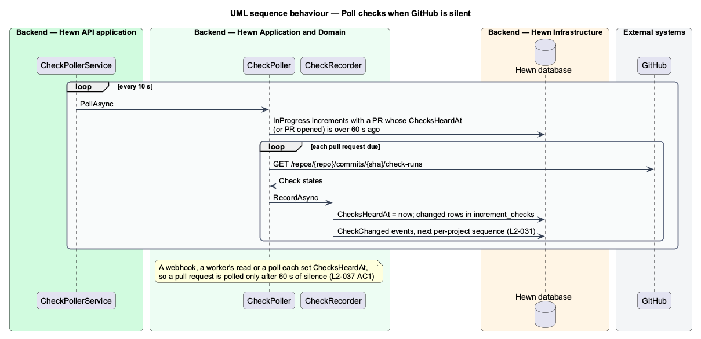
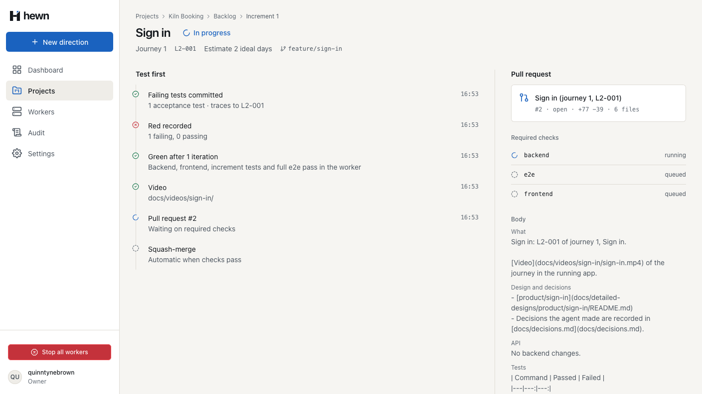
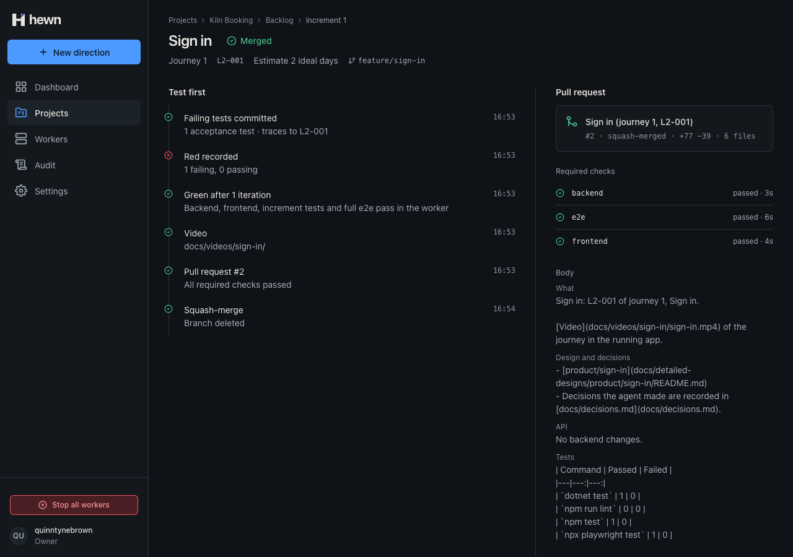
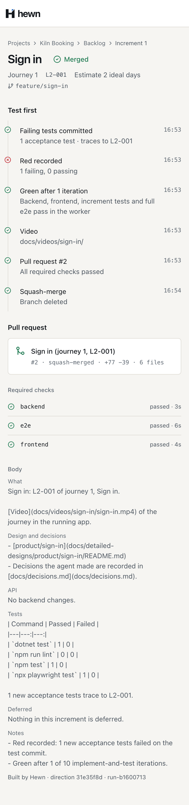
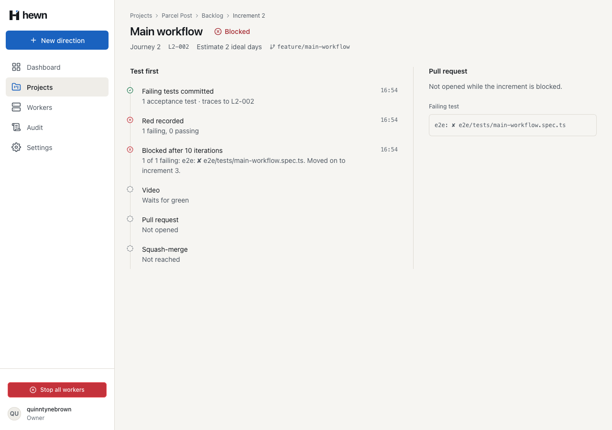
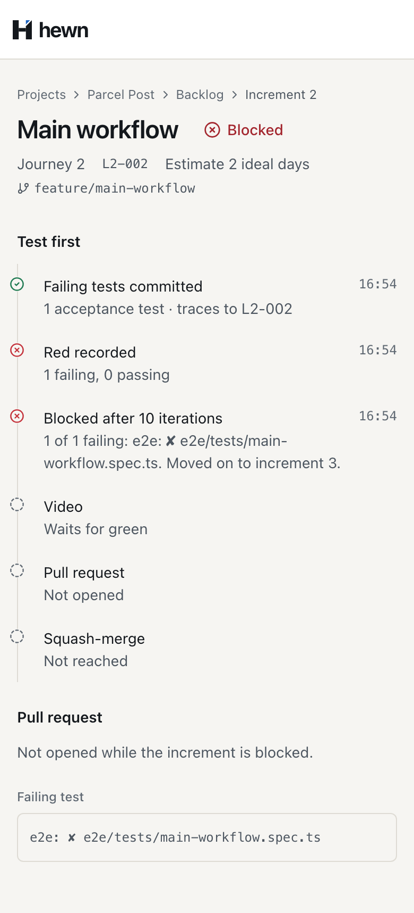

Red, each iteration, the pull request and its checks, and the squash-merge, live.


const mine = (e: ProjectEvent) =>
CHANGES.has(e.type) && (e.payload['number'] === undefined || e.payload['number'] === n);
// The first read, then one more after each of this increment's events.
const reads$ = merge(
of(null),
this.events.follow(id, project.lastSequence).pipe(filter(mine)),
).pipe(
scan((count) => count + 1, 0),
switchMap(() => this.api.getIncrement(id, n)),
await context.updateIncrement(n, {
status: 'InProgress',
testCount: red.failed + red.passed,
redFailing: red.failed,
redPassing: red.passed,
});
while (state.iterations < maxIterations) {
state.iterations++;
// Each iteration is reported as it starts, so Mission Control shows "iteration n of 10" live.
await context.updateIncrement(n, { status: 'InProgress', iterations: state.iterations });
await context.updateIncrement(
n,
'path' in video
? { status: 'InProgress', video: 'Recorded', videoNote: `docs/videos/${slug}/` }
: { status: 'InProgress', video: 'Failed', videoNote: video.failed.slice(0, 500) },
// L2-024 AC3: the increment shows its pull request, and the API follows its checks from now on.
await context.updateIncrement(n, { status: 'InProgress', pullRequestNumber: pull.number });
if (row.Update(check.Status, check.Conclusion, check.StartedAt, check.CompletedAt))
{
await events.AppendAsync(projectId, "CheckChanged", new
{
directionId = increment.DirectionId,
number = increment.Number,
pullRequestNumber = number,
name = check.Name,
status = check.Status,
conclusion = check.Conclusion,
}, cancellationToken);
}
}
await db.SaveChangesAsync(cancellationToken);
await events.PublishAsync(cancellationToken);
if (string.IsNullOrEmpty(secret))
{
return "no webhook secret is configured";
}
if (string.IsNullOrEmpty(header))
{
return "unsigned";
}
if (!header.StartsWith(Prefix, StringComparison.Ordinal) || header.Length != Prefix.Length + 64)
{
return "malformed signature";
var expected = HMACSHA256.HashData(Encoding.UTF8.GetBytes(secret), body);
return CryptographicOperations.FixedTimeEquals(expected, given) ? null : "signature mismatch";
var problem = WebhookSignature.Problem(configuration["HEWN_GITHUB_WEBHOOK_SECRET"], body, Request.Headers["X-Hub-Signature-256"].ToString());
if (problem is not null)
{
logger.LogWarning("Rejected GitHub webhook {Delivery} ({Event}) from {Address}: {Problem}", delivery, type, HttpContext.Connection.RemoteIpAddress, problem);
return Problem(statusCode: StatusCodes.Status401Unauthorized, title: "The webhook signature is missing or invalid.", extensions: new Dictionary<string, object?> { ["code"] = "webhook_signature_invalid" });
}


: d.testsPassedEarly
? {
title: 'Tests passed before implementation',
status: 'Skipped',
time: time(d.testsCommittedAt),
detail: `${d.redPassing} of ${d.testCount} passed on the test commit; flagged in the PR Notes`,
}
: {
title: 'Red recorded',
status: 'Failed',
time: time(d.testsCommittedAt),
detail: `${d.redFailing} failing, ${d.redPassing} passing`,
},
);
if (blocked) {
const failing = `${d.failingTests.length} of ${d.testCount ?? d.failingTests.length} failing: ${d.failingTests.join(', ')}.`;
steps.push({
title: `Blocked after ${plural(d.iterations, 'iteration')}`,
status: 'Blocked',
time: time(d.finishedAt),
detail: `${failing} ${d.movedOnTo !== null ? `Moved on to increment ${d.movedOnTo}.` : 'Every increment left depends on it.'}`,
});
<h3 class="subhead mt-6">Required checks</h3>
<ul class="checks mt-2" aria-live="polite">
@for (check of checks(); track check.name) {
<li>
<svg hw-status-icon [status]="check.status"></svg
><span class="visually-hidden">{{ check.status }}:</span
><span class="checks__name">{{ check.name }}</span
><span class="checks__d">{{ check.detail }}</span>
</li>
} @empty {
[Fact]
public async Task An_increment_shows_red_recorded_each_iteration_and_green()
{
var (owner, projectId, worker, run) = await LeaseIncrementsAsync();
await UpdateAsync(worker, run, 1, new { status = "InProgress" });
await UpdateAsync(worker, run, 1, new { status = "InProgress", testCount = 4, redFailing = 4, redPassing = 0 });
await UpdateAsync(worker, run, 1, new { status = "InProgress", iterations = 3 });
var implementing = await IncrementAsync(owner, projectId, 1);
8 new, through the real API
progress reported; timeline, checks, size
states, visual, a11y, live
// L2-021 AC3, L2-022: red recorded, then green.
await expect(increment.step('Red recorded').detail).toHaveText(/^\d+ failing, 0 passing$/, { timeout: 30_000 });
await expect(increment.step('Green after 1 iteration').title).toBeVisible({ timeout: 30_000 });
// L2-024 AC3, L2-037 AC1: the pull request and its required checks, as they change.
await expect(increment.pullRequest).toBeVisible({ timeout: 30_000 });
await expect(increment.pullRequest).toContainText(/#\d+ · open/);
await expect(increment.checks.filter({ hasText: 'Running:' }).first()).toBeVisible({ timeout: 30_000 });
for (const name of ['backend', 'frontend', 'e2e']) {
await expect(increment.check(name).root).toContainText('Succeeded:', { timeout: 30_000 });
const unsigned = await page.request.post('/api/github/webhook', { data: body, headers });
expect(unsigned.status()).toBe(401);
const signature = `sha256=${createHmac('sha256', WEBHOOK_SECRET).update(body).digest('hex')}`;
const signed = await page.request.post('/api/github/webhook', {
data: body,
headers: { ...headers, 'X-Hub-Signature-256': signature },
});
expect(signed.status()).toBe(202);



